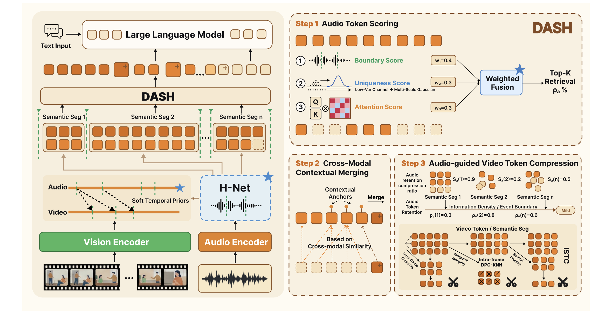
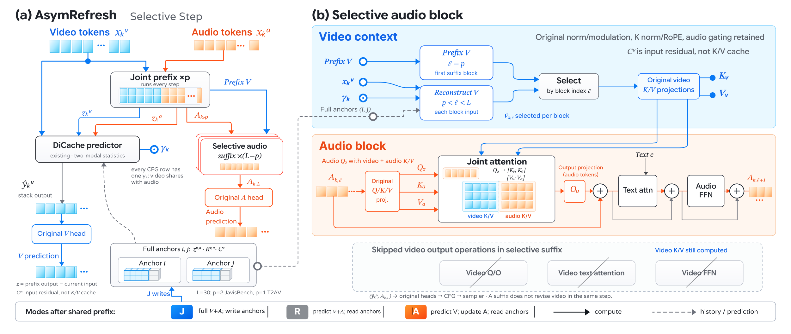
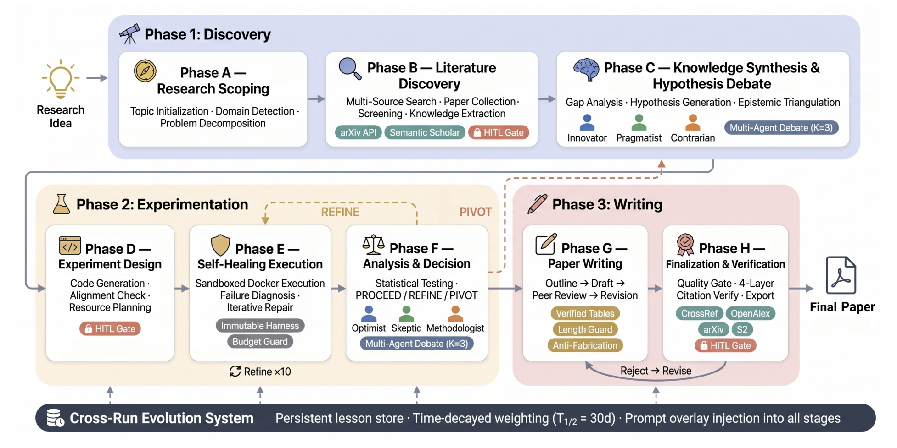
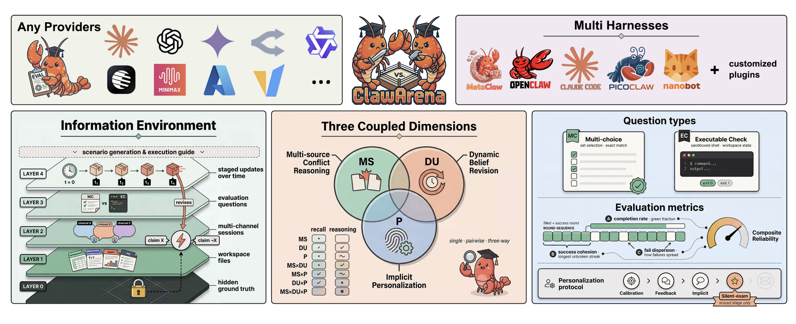

DASH: Dynamic Audio-Driven Semantic Chunking for Efficient Omnimodal Token Compression
ECCV 2026 · European Conference on Computer Vision, pp. 293–309
I study Computer Science and Technology in the Elite Class at Tongji University’s Guohao College.
I work on multimodal models and self-improving agents: making audio-visual understanding and generation more efficient, and helping agents learn through experimentation.
Currently, I work with Prof. Huaxiu Yao at UNC-Chapel Hill on scientific research agents and recursive self-improvement. Previously, I worked with Prof. Tao Huang and Prof. Yanmin Qian at Shanghai Jiao Tong University on multimodal generation and efficient inference.

ECCV 2026 · European Conference on Computer Vision, pp. 293–309


arXiv:2605.20025, 2026

GUI agents & on-device LLMs · Project member
I helped develop cPilot, a desktop agent that combines on-device LLMs with cloud models to automate multi-step GUI tasks. My work focused on its CAMEL-based agent architecture and routing tasks to specialized models.
The project won a National First Prize at the China International College Students Innovation Competition and was commercialized through One Token, a startup that raised over RMB 10 million in external funding.
B.S. in Computer Science and Technology (Elite Class), Guohao College
Minor in Finance
Outside research, I enjoy playing the piano, badminton, anime, and karaoke. I also like playing Counter-Strike 2 (golden B+ at perfect world) and VALORANT.
Here I would like to share two of my favorite performances, by Lang Lang and Animenz.
By the way, I'm exercising for bo-ji.